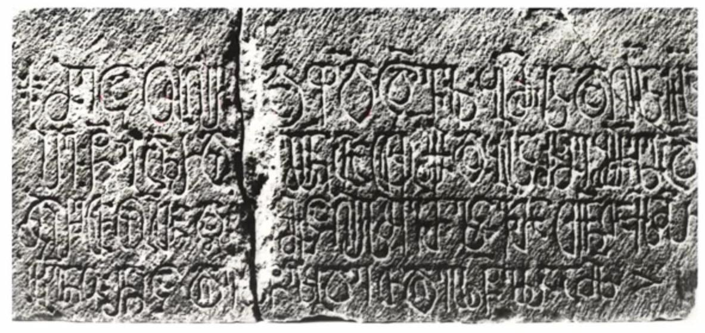

ლუვრის წარწერა
შინაარსი / Summary
მოსახსენებელი
ბიბლიოგრაფია Bibliography
კრიტიკული გამოცემა Interpretive Edition
† მეცა უღირს ი და ფ(რია)დ ც(ო)დვ(ი)ლი ბიძჲსა და ღ(ირს)ისა ჩ(უენ)ისა
პ(ეტრ)ე წ(ინამღურისა) გაზრდილმ(ა)ნ არათუ მ(ო)ქმ(ე)დობისა რ(ა)ჲს(ა)მე შემ(ძ)ლე ა(რამე)დ
მცირეთა ოფლთა და მეცა ღირსმყავთ ლ(ო)ცვ(ა)თა თქ(უე)ნთა ქ(რისტე)ს მ(იე)რ
ს(ა)ხ(იე)რნო რ(ომელ)ნიცა დღეს(ა)სწ(აუ)ლ(ო)ბდეთ დღეს(ა)სწ(აუ)ლსა ამ(ა)ს
დიპლომატიური გამოცემა Diplomatic Edition
† ႫႤႺႠ ႳႶႨႰႱ Ⴈ ႣႠ ႴႣ ႺႣႥႪႨ ႡႨႻჂႱႠ ႣႠ ႶႨႱႠ ႹႨႱႠ
ႮႤ Ⴜ ႢႠႦႰႣႨႪႫႬ ႠႰႠႧႳ ႫႵႫႣႭႡႨႱႠ ႰჂႱႫႤ ႸႤႫႪႤ ႠႣ
ႫႺႨႰႤႧႠ ႭႴႪႧႠ ႣႠ ႫႤႺႠ ႶႨႰႱႫႷႠႥႧ ႪႺႥႧႠ ႧႵႬႧႠ ႵႱ ႫႰ
ႱႾႰႬႭ ႰႬႨႺႠ ႣႶႤႱႱႼႪႡႣႤႧ ႣႶႤႱႱႼႪႱႠ ႠႫႱ

ლუვრის წარწერა
{'ka': '† მეცა, უღირსი და ფრიად ცოდვილი, ბიძისა და ღირსისა ჩუენისა პეტრე წინამძღურის გაზრდილი, არათუ მოქმედობისა რაჲსამე შემძლე,\n არამედ მცირეთა ოფლთა, თქვენი ლოცვის ღირსი გამხადეთ, სახიერნო, რომელნიცა დღესასწაულობდეთ დღესასწაულსა ამას.'}
{'default': 'ზაზა ალექსიძემ ლუვრის წარწერა ახტალის თორმეტი მოციქულის ეკლესიის ათსტრიქონიანი წარწერის გაგრძელებად მიიჩნია. სწორედ ეს (პეტრე წინამძღვრის)\n წარწერა გახდა მისთვის გასაღები, მიმხვდარიყო, თუ ვინ არის ლუვრის წარწერის სუბიექტი. ეს გახლავთ ილარიონი, რომლის ვინაობაც სწორედ ახტალის\n წარწერიდან ირკვევა. მეორე საკითხი, რასაც ახტალის წარწერა აწესრიგებს ლუვრის წარწერაში, ეს არის ავაგ ათაბაგის სამწირველოს მშენებლობაში მისი\n უშუალო, ფიზიკური მონაწილეობა. ამით გასაგები ხდება ლუვრის წარწერის ის ადგილი („არათუ მოქმედობისა რაჲსამე შემძლე, არამედ მცირეთა ოფლთა“),\n სადაც წარწერის ავტორი თავისი ფიზიკური შრომის შესახებ ბუნდოვნად მსჯელობს. როგორც ირკვევა, აქ ლაპარაკია ავაბ ათაბაგის სამწირველოს აშენებისას\n გაღებულ შრომაზე. გარდა ამისა, ნათელი ხდება, თუ რას გულისხმობს ლუვრის წარწერის ბოლო ფრაზა („რომელნიცა დღესასწაულობდეთ დღესასწაულსა ამას“).\n ახტალის წარწერა ცხადყოფს, რომ ილარიონის ბიძამ, პეტრე წინამძღრმა, თავისი სულის მოსახსენებლად განაჩინა თორმეტი მოციქულის ხსენების მეორე დღე\n (14 ივლისი). სწორედ ამ დღეს უნდა გულისხმობდეს ილარიონიც. ამ ორი წარწერის, ახტალისა და ლუვრის, გაანალიზების შედეგად ზაზა ალექსიძე ასკვნის, რომ\n ისინი მოთავსებული იყო ერთმანეთის გვერდით, ჯერ პეტრეს წარწერა, ბალავრის თავზე, შემდეგ კი ილარიონის, მის გასწვრივ. ამ მოსაზრებას ამყარებს\n წარწერების პალეოგრაფიული ერთგვაროვნებაც.'}
<div type="edition" xml:lang="ka" ana="mtavruli" xml:space="preserve">
<ab>
<lb n="1"/><w lemma="ქრისტე"><expan><abbr>ქ</abbr><ex>რისტ</ex><abbr>ე</abbr></expan></w>
<w lemma="განსუენება"><expan><abbr>გა</abbr><ex>ნ</ex><abbr>ო</abbr><ex>ჳ</ex><abbr>ს</abbr><ex>უ</ex><abbr>ენე</abbr></expan></w>
<w lemma="სულ">სოჳ<lb n="2" break="no"/>ლსა</w>
<name nymRef="ვაჩა">ვაჩაჲს<lb n="3" break="no"/>ასა</name>
<name nymRef="გურა"><expan><abbr>გო</abbr><ex>ჳ</ex><abbr>რაჲ<lb n="4" break="no"/>სასა</abbr></expan></name>
<name nymRef="მირა"><expan><abbr>მ</abbr><ex>ი</ex><abbr>რა</abbr><ex>ჲ</ex><abbr>ს</abbr><ex>ა</ex><abbr>ს</abbr><ex>ა</ex></expan></name>
</ab>
</div>